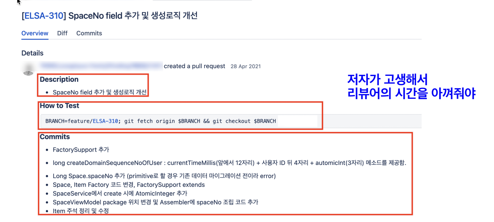

OKKY 1월 세미나에서 백명석님의 “한번 듣고 평생 써먹는 코드 리뷰 노하우”를 듣고 정리한 내용
왜 코드 리뷰를 해야 하나?
“Software is eating the world”
- 소프트웨어에 의해 운영되는 제품과 서비스들의 영역이 늘어나고 있음
우리가 살고 있는 시대
- 변동성 - 변화의 속도가 빠르고 다양하게 전개될것
- Global GDP에서 Tech의 비율
- 2020년: 5% → 2030년: 10%
- 주목할 만한 것은 나머지 90%. DT(Digital Transformation)는 이제 시작임
- 지난 2년동안 Non-Tech 영역에서 개발자 수 증가속도가 Tech 영역에서보다 가파름
- ex. 자동차 (기계공학 보다 소프트웨어 공학자를 +35% 더 채용)
- 우리나라 기준 코딩인구 17만명. 미국은 400만명. 우리나라도 미국과 유사한 개발자 수를 가지려면 지금의 4배정도 더 필요함. 근데 미국도 3배정도 많아져야 한다고하는데… 우리나라는 결국 개발자가 지금보다 12배가량 더 필요함
- 개발 조직의 성능(생산성)이 중요해짐
개발 생산성
- 서비스가 출시된 이후 시간이 지날수록 개발자 수는 늘어나지만 생산성은 줄어듦.
- 좋은 설계 없이 빠르게 빠르게 개발하다보면 새로운 기능을 개발하기 보다는 기존에 쌓아놓은 문제들을 해결하는데(기술 부채)에 시간을 더 투자하게 됨. → 생산성의 하락
SW 공학의 특성
- 공학 = 설계(Design) + 빌드(Build)
- 설계: 예측하기 어렵고, 급여가 비싸고 창의적인 사람들을 필요
- 빌드: 좀 더 예측하기 쉬움
- 공학 활동의 최종 목적
- 빌드 할 수 있는 어떤 종류의 재생산 가능한 문서
- SW 공학의 설계와 빌드
- 설계 = 완전한 소스 코드
- SW 빌드 = 컴파일
- 좋은 설계 ~= 클린코드
- SW 엔지니어: 설계를 잘하는 사람 → 코드를 잘 작성하는 사람
클린 코드의 중요성
- SW의 진정한 비용 ~= 유지보수(전체의 80%이상)
- 한번 작성한 코드는 10번 이상 읽음. 작성 보다 이해에 10배의 노력 소요
- 90% 이상의 시간을 어떤 코드를 이해하는데 사용함
SW 개발의 단순한 진리
- “The only way to go fast, is to go well” - Robert C. Martin
- 시간이 흘러도 생산성 저하, 비용 증가를 막을 수 있는 유일한 방법
- SW 품질에 신중해야
- SW의 비용과 품질의 관계는 비정상적, 비직관적
- 향후 변경 비용을 낮춤으로써 익숙한 트레이드오프를 역전시킴
학교에서는 왜?
- 구현하고 소비자들이 사용하면서 들어오는 요구사항을 경험하지 못함.
- 지식과 경험의 공유만이 전문성을 갖춘 개발자 육성
- 책 - 소프트웨어 장인 추천
코드 리뷰
- 개발자가 지금부터 당장 행할 수 있는 공유 활동
- Code SNS 댓글 놀이. 재밌음.
- 배움을 주고 받으며 지속가능한 SW 개발자가 될 수 있는 실천법
- 주목적: 품질 문제 검수(버그, 장애)
- 더 나은 코드 품질: 아키텍처 속성 개선을 위한 코드 개선(향후 변경 비용 개선, 빠른 피드백)
- 학습 및 지식 전달: 코드, 해결책 등과 관련된 지식 공유에 기여
- 공유(주고 받는 학습)를 통한 역량 증대 및 성장
- 참여한 모든 사람들의 배움의 기회
- 대개의 경우 리뷰어들도 리뷰 과정에서 지식을 얻게 됨(하드스킬, 소프트스킬)
- 동기부여
- 상호 책임감 증대
- 집단 코드 오너십 및 결속 증대
- 내가 하고 있는 일에 관심을 가져주는 것
- 팀에서 일어나는 일 공유. 내 동료는 무엇을 하나? 팀웍
- 개발 문화 개선
- 설계 개선 제안
- “이번에 안된다면 다음에 공부해서 적용해보면 어떨까요?”
코드 리뷰의 절차
- 저자
- 코드 작성, 리뷰 요청.
- 리뷰어
- 코드를 읽고
- 머지 가능한지 결정
- 변경 내역
- 리뷰 시작 전에 작성
- 저자가 머지를 원하는 소스 코드에 대한 일련의 변경(잘한 것, 아쉬운 것, 눈여겨 볼 것)에 대해 기술
- 저자가 고생해서 리뷰어의 시간을 아껴줘야함.
왜 코드 리뷰가 어려운가?
- 저자
- 본인 생각에 멋지다고 생각하는 PR을 보냄
- 리뷰어
- 왜 멋지지 않은지에 대한 장황한 이유를 작성 → 저자는 좌절 혹은 불쾌
- 코드에 대한 비판을 자신에 대한 비판으로 이해
- 코드 리뷰는
- 지식 / 공학적 결정을 공유하는 기회
- 공유(잘 한 것, 아쉬운 것)를 통해 서로의 지식/경험을 나누며 상호 학습을 통한 역량 증대 수단
- 코드 토의를 개인적 공격으로 받아들이면 물거품
- 생각을 글로 전달하는 것에 대한 어려움
- 오해의 위험이 큼(음성 톤, 표정의 부재)
- 피드백을 조심스럽게 표현하는 것이 더 중요
- “You forgot to close the file handle” → “I can’t believe you forgot to close the file handel! You’re an idiot!” 라고 받아들임.
- 처음 코드 리뷰를 했을 때
- 금요일 오후 svn commit을 조사하며 리뷰
- 불러서 깨기. 불화/갈등
- Git의 등장
- Local branch에 commit 단위 리뷰할 수 있음
- SNS 댓글 놀이
효율적인 PR 방법
지루한 작업은 컴퓨터로 처리
- 코드를 읽은 것은 인지적 부담이되는 고수준의 집중이 요구되는 작업
- 컴퓨터가 할 수 있는 일에 이런 노력을 낭비하지 말라
- 심지어 기계가 더 잘 할 수 있는 일에
- Formatting Tool
- 공백, 들여쓰기 오류 등
- 별도의 커밋/PR로 분리. 리뷰 불필요를 기술해서 리뷰를 생략할 수 있도록
- 코드를 읽은 것은 인지적 부담이되는 고수준의 집중이 요구되는 작업
스타일 가이드를 통해 스타일 논쟁을 해소
- 스타일에 대한 논쟁은 리뷰에서 시간 낭비
PR을 올릴 때 주석 달기
모두를 포함하라
- 많은 사람들이 볼 수록 버그를 더 잘 찾아낼 수 있다.
- 많은 사람들이 본다는 것을 알면 저자는 더 잘하려고 노력할 가능성이 커짐
의미있는 커밋으로 분리
호율적인 리뷰 방법
- 리뷰는 즉시 시작
- 코드 리뷰를 높은 우선 순위로
- 저자는 리뷰가 종료될 때까지 대기(Blocked)함
- 리뷰를 바로 시작하면 선순환됨
- 코드를 읽고 피드백을 줄 때는 시간을 가지고 진행해도 되지만 시작은 바로 해라
- 리뷰는 하루안에
- 리뷰가 어려우면 좀 더 자주할 것
- PR에 포함된 변경이 적도록 노력
- 반나절 정도 작업한 양 정도
- 모든 팀원들이 하루에 두번 작은양의 PR을 리뷰할 수 있고 최대 4시간 안에 리뷰가 완료될 것
- 근본적인 문제는 사람들이 리뷰할 시간이 없다고 느낀다는 것임
- 당신의 ‘개인 기여’로만 평가를 받고 있다면, 팀을 돕기 위해 수행하는 모든 일은 시간 낭비처럼 보임
- 조직적인 문제임
- Pull Request vs Pair Programming
- 트레이드 오프 : Latency or Throughput?
- PR: 내성적, 사색, 비동기
- PP: 외향적, 친밀한 개인적 상호 작용
- 절대 답은 없음. 앙상블 방식도 취할 수 있음.
- 코드 리뷰를 높은 우선 순위로
- 고수준으로 시작, 저수준으로 내려가라
- 리뷰 라운드에서 많은 의견을 남길 수록, 저자가 당황할 위험 커짐
- 하나의 라운드에 20~50개 정도의 의견은 위험의 시작
- 초기 라운드에서는 고수준 피드백으로 제한
- 버그, 장애, 성능, 보안 등
- 고수준의 피드백이 처리된 후에 저수준 이슈를 처리
- 설계,
- 리팩터링
- 예제 코드 제공에 관대해라
- 저자를 기분 좋게 하기 위한 방법
- 너무 긴 예제는 관대한 것이 아니라 억압적으로 보임
- 리뷰의 범위를 존중하라
- PR에 포함되지 않은 라인은 리뷰 범위가 아님
- 태그를 활용
- [NIT]
- ‘고치면 좋지만 아니어도 그만’을 의미. 그래도 보통 고침
- 리뷰어는 항상 더 개선할 수 있는 의견을 자유롭게 남길 수 있어야 함.
- [NIT]
- 한 두 등급만 코드 레벨을 올리는 것을 목표로
- D등급의 PR을 받으면 저자가 C나 B등급을 받로고 도와라.
- 완전하지는 않아도 충분히 좋은 코드가 되도록
- F 등급
- 기능적으로 틀렸거나 너무 복잡해서 정합성에 확신이 없는 상태
- 승인을 보류하는 유일한 이유
- 수 차례의 리뷰 라운드 후에도 코드가 F상태인 경우
- 리뷰의 핵심
- “무엇이 코드를 나아지게 하는가”
- 비판의 대상은 코드. 저자가 아님. 절대 “너”라고 하지마라
- 건설적인 피드백을 하라
- 동료들 간의 코드 리뷰
- not 경쟁 유발 but 팀의 생산성을 높이는 것
- 건설적인 피드백을 못하겠으면 차라리… 그냥 넘어갈 것
- 동료들 간의 코드 리뷰
- 진정한 칭찬을 해라
- 대부분의 리뷰어가 잘못된 부분에만 집중
- 저자가 주니어 혹은 신규 입사자라면 리뷰에 매우 민감하고 방어적일 수 있음
- 진심어린 칭찬은 리뷰어가 잔인한 감시자가 아니라 도와주려는 팀동료라는 것을 보여줘 긴장감은 낮춤
- 피드백은 명령이 아니라 요청으로 표현해라
- 일상에서 동료에게 명령하지 않음
- ex. 이 클래스를 별도의 파일로 분리하라 → 분리할 수 있을까요? → 클래스가 너무 커지는 거 같은데괜찮을까요?
- 의견이 아니라 원칙에 기반하여 피드백하라
- 저자에게 의견을 줄 때는
- “제안하는 변경”과 “변경의 이유”를 모두 설명하라
- ex. 이 클래스를 2개로 분리해야 해요
- SW는 과학인 동시에 예술 ??
- 저자에게 의견을 줄 때는
- 반복적인 패턴에 대해서 피드백을 제한하라
- 저자의 실수가 동일한 패턴임을 식별했다면 모든 경우를 언급하지는 말라
- 동일 패턴에 대해서 2~3개 정도의 예를 언급하라.
- 교착상태 시
- 교착상태를 적극적으로 처리해라
- 교착상태로 향하는지 나타내는 표식
- 톤이 점차 팽팽해지고 공격적
- 라운드당 커멘트가 줄어들지 않는 경향을 보임
- 너무 많은 커멘트에 저항이 보임
- 코드 리뷰의 최악의 결과는 교착상태
- 만나서 얘기하라
- 텍스트 기반의 의사소통은 상대가 인간이라는 것을 잊게함
- 인정하거나 Escalate하라
- 교착상태가 길어지면 관계가 나빠짐(퇴사)
- 그냥 승인하는 비용
- 저수준 코드를 무심코 승인하면 SW 품질이 낮아질 수 있음
- 동료와 다퉈서 함께 일하지 않게 된다면 고수준의 품질을 얻을 수 없음
- 인정이 불가한 경우
- 저자에게 논의를 팀장이나 테크 리더에게 Escalation
- 다른 리뷰어에 할당
- 교착상태로부터 회복
- 설계 리뷰를 고려하라
- 코드 리뷰 때 설계 리뷰 때 논의되었어야 할 사항을 논쟁하는가?
- 교착상태로 향하는지 나타내는 표식
- 교착상태를 적극적으로 처리해라
- 코드 리뷰를 하는 아주 재밌는 방법
- PR을 작성한 사람과 짝 프로그래밍을 하며 어떻게 고치는게 좋은지 보여주고
- Revert(원복)
- PR을 작성한 사람이 스스로 개선할 수 있도록 기회를 주는….
- 20분 짝 프로그래밍 개선 / 2시간 스스로 개선
- 결정은 저자가
- 완변학 설계가 아니라 당신이 할 수 있는 최고의 설계를 추구
- 팀 정신을 유지하기 위해 불완전한 해결책을 받아들여라
- 모든 설계 결함이 항상 실제로 문제가 되지는 않음
- 코드 리뷰의 목적은 비난이 아니라 배움이다
- 종종 리뷰어들도 배우게 됨
- 리뷰하려는 코드가 그냥 나쁠 때가 있음
- 저자가 그날 무슨 일이 있을 수도
- 코드 리뷰 문화 정착의 어려움 / 극복방법
- 온/오프라인의 차이
- 꾸중 vs 토론
- 저자의 노력
- 리뷰어 n명의 시간을 절약
- 효과적인 리뷰 가능
- 리더의 관심과 의지
- 가끔, 그러나 매우 자세히
- 코드 비난에 대한 두려움
- 멋져 보여야
- 하고 싶어짐. 그게 뭐든
- Tool(IDE, Hotkey)
- How do you inspire your team to adopt that menatlity
- 좌절할 준비를 하라
- 당신이 원한다고 남에게 영감을 줄 수는 없다.
- 당신은 당신 자신의 태도만 제어 가능. 타인이 나의 태도에 어떻게 반응할지는 제어 불가
- 영감은 부산물
- 내가 어떻게 모범이 될 수 있을까?
- 지각하지 말라. 업무에 기여하라. 긍정적으로 임해라. 사람들을 잘 대하라
- 기술적 훈련에 대해 언급하려며 고도로 숙달되어야 함
- 키보드로 코딩을 할 때 사람들이 경악을 하도록 해라
- 내가 어떻게 모범이 될 수 있을까?
- 온/오프라인의 차이
코드 리뷰 효과
- 예상하지 못한 버그를 타 프로젝트에서 발견하기도
- 많은 사람이 내가 작성한 코드를 본다는 생각에 PR전에 한번 더 코드를 다듬게 됨.
- 좋은 설계, 아키텍처, 클린코드, TDD 등에 대한 공감대/열정 형성
- 잘하는 동료를 보면 잘하려는 열정이 생김
코드리뷰를 잘하기 위해 필요한 기술들
- 리팩토링
- ‘결과의 변경 없이 코드의 구조를 재조정함’
- 주로 가독성을 높이고 유지보수를 편하게
- 버그를 없애거나 새로운 기능을 추가하는 행위는 아님
- TDD와 연결된 리팩토링
- ‘돌아가는 코드를 가지고 설계를 하는 행위’
- 그린필드 프로젝트에서 아무것도 없는 상태에서 분석/설계부터 시작하는 비율
- 코드 리뷰에서 많이 언급하는 기술적 내용
- ‘결과의 변경 없이 코드의 구조를 재조정함’
- Legacy Code 다루기
- Working Effectively With Legacy Code - 책
- 의존성 관리
- 테스트 추가
- 새로운 코드 빠르게 추가
- 레거시 분석
- Working Effectively With Legacy Code - 책
- Clean Code & TDD